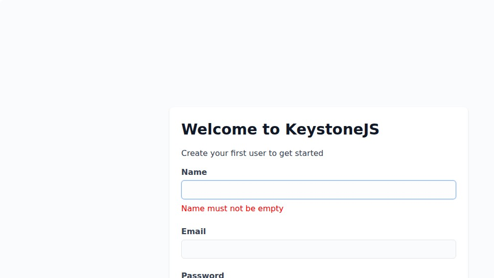
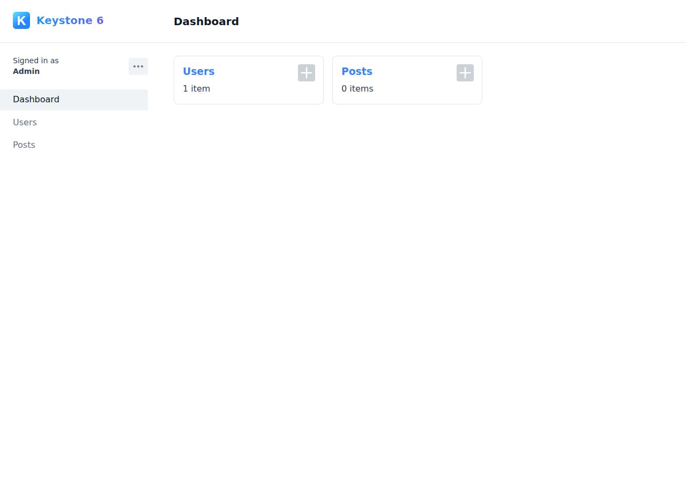
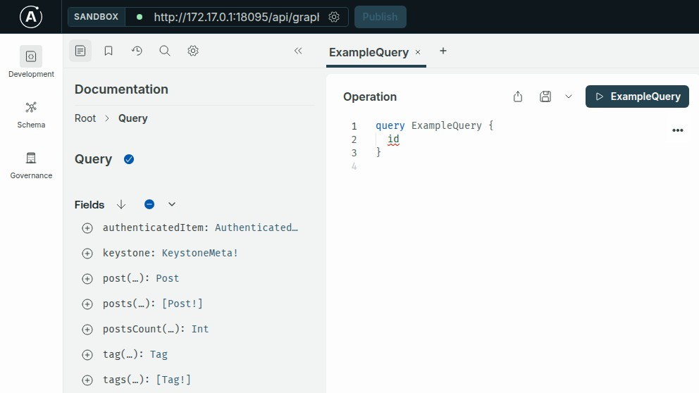

Keystone 6.5.2 first boot: a missing static file, a phantom --port, and a session-secret footgun
Keystone is the kind of TypeScript-first headless CMS that looks great on the README — schema-as-code, GraphQL out of the box, MIT-licensed, Prisma underneath, and a one-command scaffold via npm create keystone-app. We ran exactly that on a clean Linux box on 2026-05-07. The starter does boot. It also throws a non-fatal ENOENT on the dev-loading splash, silently ignores --port, and lets you ship a config that rotates your session secret on every restart. Here's the unedited startup log, the screenshots, and the three things we'd change before we put this in front of a content team.
We're the team behind SimpleReview, a Chrome extension that drafts code-fix PRs on whatever site you click. Not affiliated with KeystoneJS or Thinkmill. This is a deployment note from one real npm create keystone-app session on one Linux box, dated above. We picked Keystone because it's the closest-feeling competitor to Cal.com and Ghost in the "TypeScript + Prisma + admin UI" niche we've been auditing. If we got something wrong, open a GitHub issue and we'll fix it.
The exact commands we ran
# Node 22 LTS already on the box
node --version # v22.21.1
npm --version # 10.9.4
mkdir -p /tmp/keystone-test && cd /tmp/keystone-test
npm create keystone-app@latest
# When prompted: "What directory should create-keystone-app generate your app into?"
# answer: my-app
cd my-app
npm run dev # this is the friction surfaceThe scaffolder pulls create-keystone-app@10.0.3, drops four source files (keystone.ts, auth.ts, schema.ts, tsconfig.json) and resolves a fairly large tree: 598 MB of node_modules for what is, at this point, two empty lists with one relationship. (Prisma's CLI plus the Apollo server plus the AWS S3 client they ship by default is most of it.) Total scaffold time on a fast NVMe with a warm npm cache: about 80 seconds. The four source files together are 340 KB.
The starter resolves @keystone-6/core@6.5.2 and @keystone-6/auth@8.1.0 through the carets in package.json. Those are the versions every number below refers to.
Friction #1 — --port is silently ignored
Our box already had something on port 3000 and we didn't want to fight it, so the first thing we tried was the obvious incantation:
npx keystone dev --port 18095Keystone happily printed:
✨ Starting Keystone
⭐️ Server listening on :3000 (http://localhost:3000/)
⭐️ GraphQL API available at /api/graphqlNote the 3000. The --port flag was eaten by npx and the keystone CLI never sees a port option — its --help doesn't list one either. The only way to change it is the config.server field in keystone.ts, or the PORT env var. The relevant code path is in scripts/cli/dist/keystone-6-core-scripts-cli.cjs.dev.js around line 1259:
const httpOptions = { port: 3000 };
if (config?.server && 'port' in config.server) {
httpOptions.port = config.server.port;
}
// preference env.PORT if supplied
if ('PORT' in process.env) {
httpOptions.port = parseInt(process.env.PORT || '');
}So we re-ran with PORT=18095 npx keystone dev. That worked. Two minutes wasted, no error message, just the wrong port in the log. This is the same shape of footgun as Cal.com's silent DATABASE_DIRECT_URL — a thing the README never mentions and the runtime never warns about.
The Keystone CLI accepts unknown arguments without warning. --port, --host, --bind — all silently dropped. The server starts on its hardcoded default of 3000 unless you set PORT in the environment or add a server.port field to keystone.ts. npx keystone --help does not list --port as a flag, but it doesn't reject it either, which is the actual bug.
Friction #2 — ENOENT on every dev boot
Once we used PORT=18095, Keystone got past the listen step and started compiling the Admin UI. But the log immediately had this in it, three times:
Error: ENOENT: no such file or directory, stat
'/tmp/keystone-test/my-app/node_modules/@keystone-6/core/scripts/cli/static/dev-loading.html'Nothing in the docs prepares you for this. The error is non-fatal — Keystone keeps booting, the admin UI eventually compiles, the GraphQL endpoint comes up — but it's the only red text in the log and a first-time user is going to think their install is corrupt. We dug into scripts/cli/dist/keystone-6-core-scripts-cli.cjs.dev.js to figure out what was happening:
// line 926
const devLoadingHTMLFilepath = path__default["default"].join(
pkgDir, 'static', 'dev-loading.html'
);
// ...
// pkgDir is dirname(__dirname), which resolves to .../scripts/
// so it looks for: .../scripts/static/dev-loading.html
// but the file actually ships at:
// .../static/dev-loading.html (one level up)Verified by listing the package directly:
$ ls node_modules/@keystone-6/core/static/
admin-error.html
dev-loading.html
favicon.ico
tsconfig.json
$ ls node_modules/@keystone-6/core/scripts/static/
ls: cannot access '.../scripts/static/': No such file or directoryThe file exists, the code looks for it one directory deeper than where it lives. dev-loading.html is the splash page Keystone serves while Next.js is still compiling routes (you'd see "Loading Admin UI…" while waiting), so when it 404s the request just gets dropped silently and the user-facing impact is "the page is blank for 9 seconds." The bug appears to be a path-resolution regression in @keystone-6/core@6.5.2 — the published tarball didn't ship a scripts/static/ directory.
If the noise bothers you in dev: mkdir -p node_modules/@keystone-6/core/scripts/static && cp node_modules/@keystone-6/core/static/dev-loading.html node_modules/@keystone-6/core/scripts/static/. We are not recommending this as a fix — it's a one-line patch you re-do every npm install. Better path: pin @keystone-6/core to a version that ships scripts/static/ correctly, or wait for the upstream patch.
Friction #3 — SESSION_SECRET rotates on every boot
The starter's auth.ts ends like this:
const session = statelessSessions({
maxAge: sessionMaxAge,
secret: process.env.SESSION_SECRET,
})If you don't set SESSION_SECRET, that's undefined. statelessSessions in @keystone-6/core/session handles this by quietly defaulting to randomBytes(32).toString('base64url') — a fresh secret per process start:
// node_modules/@keystone-6/core/session/dist/keystone-6-core-session.cjs.dev.js
function statelessSessions({
secret = node_crypto.randomBytes(32).toString('base64url'),
maxAge = 60 * 60 * 8,
cookieName = 'keystonejs-session',
// ...
} = {}) {What this means in practice: every time you restart keystone dev, every existing session cookie is invalidated. Users get bounced to /signin with no error, no log line, no hint that "we just rolled the secret on you." If you forget to set SESSION_SECRET in production and your container restarts (auto-scaler, healthcheck flap, deploy) — every signed-in admin gets logged out. Then log back in. Then logged out again on the next restart.
The fix is one env var, but the silence of the default is the friction. Cal.com refuses to boot without NEXTAUTH_SECRET; Ghost refuses to boot without a database password. Keystone happily boots and just rolls the secret behind your back. We'd want a startup warning here at the very least.
What the starter actually gives you, screenshotted
Once PORT=18095 npm run dev finished compiling, hitting / 302-redirected to /init — the first-run wizard. This is what it looks like on a fresh SQLite database:

/init. Note that the "Name must not be empty" error is rendered before the user types — Keystone validates required fields on initial render. Cosmetic but jarring; almost every starter we've reviewed waits for blur or submit before flagging.We posted the createInitialUser mutation directly to the GraphQL endpoint to skip the form (the same mutation the form posts when you click "Create user"):
curl -s -X POST http://localhost:18095/api/graphql \
-H "Content-Type: application/json" \
-d '{"query":"mutation { createInitialUser(data: { name: \"Admin\", email: \"admin@example.com\", password: \"password123\" }) { item { id email name } sessionToken } }"}'Response includes a sessionToken (an iron-sealed cookie payload), which we set as keystonejs-session and got into the dashboard:

Tag — which is in schema.ts as a real list with a back-relationship to Post.tags — is not in the sidebar. The starter ships it with ui: { isHidden: true } so it only appears via GraphQL. Worth knowing if you're surprised your relationships work but the list "doesn't exist."And the GraphQL Apollo Sandbox at /api/graphql, which is mounted by default in dev:

authenticatedItem, keystone meta, plus post / posts / postsCount and (despite being hidden in the admin UI) tag / tags queries. Schema-as-code in schema.ts, GraphQL surface in your face the moment you boot.Resource numbers from the actual run
| Phase | Wall clock | Notes |
|---|---|---|
npm create keystone-app | ~80 s | Warm npm cache, NVMe disk. node_modules = 598 MB |
npm run dev → HTTP listening | 4.1 s | Server bound, but /init still compiling |
/init first request → 200 | 9.6 s | Next.js dev compile of 2,455 modules |
/init second request | ~10 ms | From cache, well under a frame |
Admin home / first compile | 509 ms | 2,461 modules. Way faster than /init — they share most |
| Total cold-start to interactive | ~14 s | HTTP up + first route compiled |
| Process RAM (RSS) at idle | 77 MiB | One npm-spawned node process, peak VmHWM 86 MiB |
Generated .keystone dir | 75 MB | Prisma client + Next.js build artifacts |
SQLite keystone.db after 1 user | 52 KiB | Schema + one row |
So Keystone is genuinely lightweight at runtime — 77 MB RSS for a working admin + GraphQL + SQLite is in the same neighborhood as a small Express app, far below a typical Next.js production server. The cold-start is dominated by Next.js dev-mode compile (~9.6 s for the first route), which evaporates on the second request. keystone build && keystone start would skip that, but we didn't measure prod-mode here.
What we wish the README had said up front
- Use the
PORTenv var, not--port. The CLI's--helpdoesn't mention port at all and silently eats unknown flags. We'd at least want a warning when an unrecognized flag is passed. - Set
SESSION_SECRETbefore you put this in front of anyone. The starter'sauth.tsreads it from env, the env var is unset, and the runtime defaults to "regenerate per boot." This is a real footgun in production. - SQLite is the default and that's wired into the starter. Fine for a tutorial, fine for one-person tooling. Switching to Postgres is a single line change in
keystone.ts(provider: 'postgresql') plus a freshDATABASE_URL, but you have to remember to do it before you have rows you care about — Keystone won't auto-migrate SQLite data into Postgres. - The Tag list is hidden by default. If you copy the starter
schema.tsverbatim and wonder why "Tag" doesn't show up in the admin sidebar, look forui: { isHidden: true }. Same applies to any list with that flag — they exist in GraphQL, not in the UI. - The
ENOENT: dev-loading.htmllog line is non-fatal. It's a missing static file in the published tarball, not a corrupt install. You can ignore it; the cost is a blank page during the 9-second first-route compile instead of a "loading…" splash.
What's actually nice about Keystone
Tone here matters: the three frictions above are real, but they're the kind of thing every CMS has on day one. The good parts are real too, and they're why we'd consider Keystone for a small content site:
- Schema-as-code, in TypeScript.
schema.tsis the single source of truth for both your Prisma model and your GraphQL surface. Adding a field is one line, no migrations dance, no admin-UI clicking.keystone devpicks it up on save. - The GraphQL sandbox is on by default. No "enable the playground" config dance — Apollo Sandbox is just there at
/api/graphqlwith the auto-generated schema docs. - The relationship field is honest.
relationship({ ref: 'Post.author', many: true })on User andrelationship({ ref: 'User.posts' })on Post — both ends, declared explicitly, no surprise foreign keys, no orphaned columns. - The auth package is opt-in. The starter wraps the config in
withAuth(...); you can rip that out and run anonymous in two lines if you're building a public-data API. - SQLite default is genuinely fast for dev. No external database to provision, no compose file, no port-forwarding. A "boot, click around, blow away the file, start over" cycle takes seconds.
Where this fits
One short, honest write-up per self-hostable headless CMS we actually run on a real Linux box. Adjacent: Cal.com 6.16.1 — the migrations don't run on boot (also Prisma+TypeScript, also an entrypoint footgun), Ghost on Linux Docker — first 90 seconds, measured. SimpleReview is the Chrome extension that turns whatever element you click on a broken admin into a draft code-fix PR — Keystone's ENOENT log noise included.
Demo: SimpleReview on a Keystone admin issue

+ ENOENT spam in container log:
scripts/cli/static/dev-loading.html not found
# actual file lives at static/, not scripts/static/
resolves to wrong relative path
# Apollo Sandbox loads · auto-generated schema
# authenticatedItem, post, posts, tag, tags
scripts/cli path.